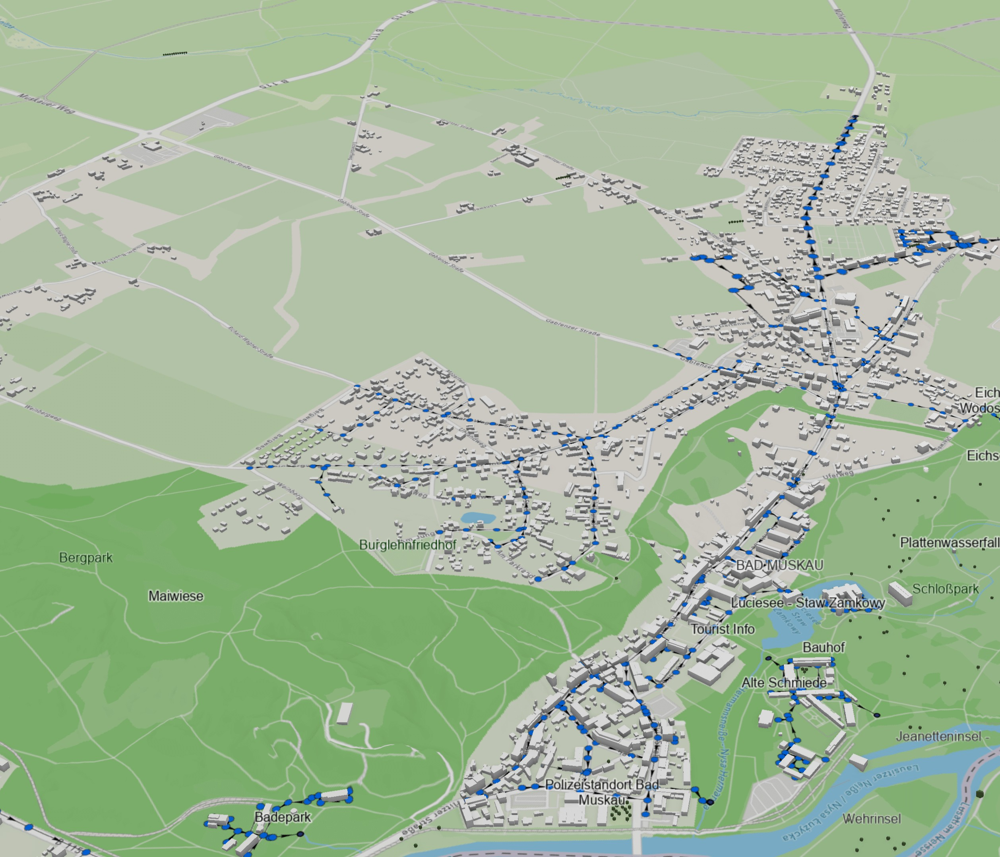
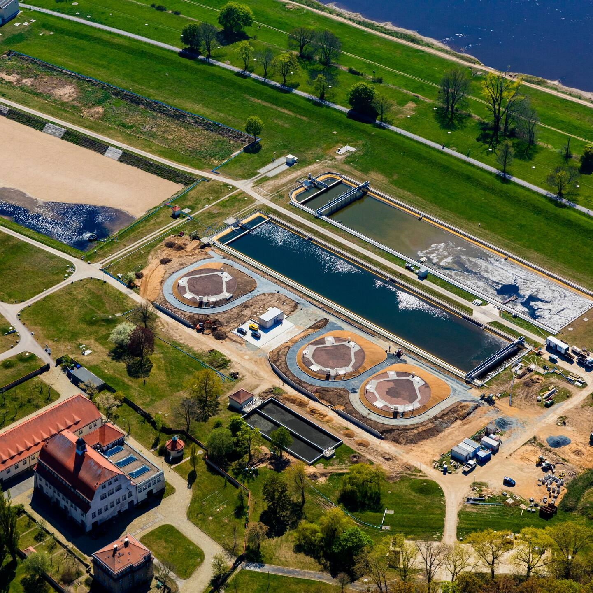
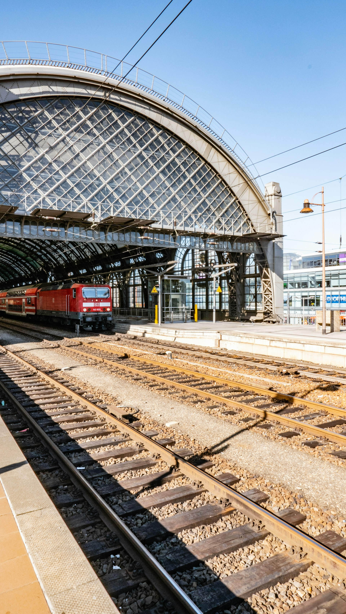
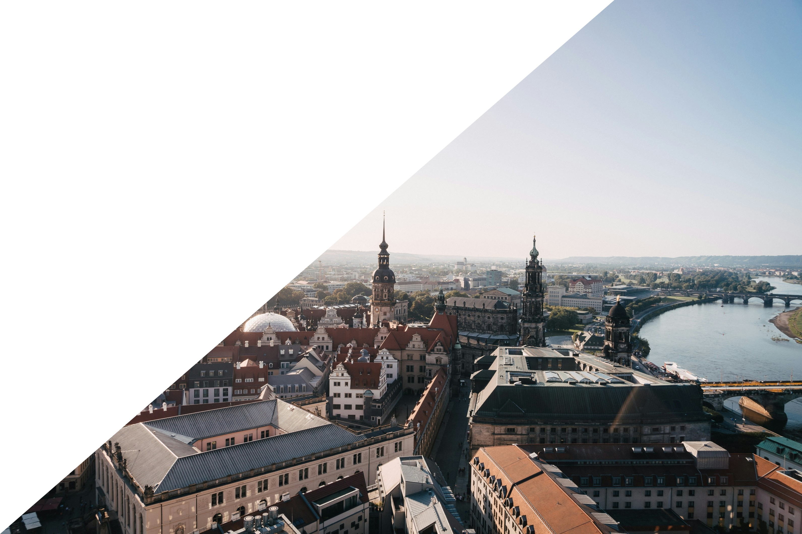

Unsere Gesellschaft ist von Infrastrukturen geprägt und auf deren Funktions- und Leis-tungsfähigkeit angewiesen. Auf Bundesebene werden als kritische Infrastruktur (KRITIS) Einrichtungen mit großer Bedeutung für das staatliche Gemeinwesen bezeichnet, bei deren Ausfall oder Beeinträchtigung nachhaltig wirkende Versorgungsengpässe, erheb-liche Störungen der öffentlichen Sicherheit oder andere dramatische Folgen eintreten würden. Zu diesen zählen die Wasser- und Energieversorgung, Abwasserentsorgung, der Transport/Verkehr, die Gesundheit, die Informationstechnik und Telekommunikation sowie weitere Sektoren. Naturgefahren wie Hochwasser, Starkregen, Hagel, Sturm, Sommerhitze und Dürre treten häufiger auf und führen so zu Schäden an Infrastruktur-bauwerken. Auch anthropogene Extremereignisse, wie Vandalismus, Sabotage, Unfälle und Cyberangriffe stellen eine Gefahr für solche Strukturen dar. Im Fokus stehen Bau-werke und bauliche Anlagen, deren Standsicherheit und Funktionstüchtigkeit als Be-standteile der kritischen Infrastruktur herausragende Bedeutung haben.
Die Nachwuchsforschergruppe TESKI verbindet die Technologieentwicklung im Wasser-, Energie- und Bausektor mit dem Schutz bestehender und künftiger kritischer Infrastruktur. Ziel ist die Stärkung der Versorgungssicherheit.
Qualifizierung der Nachwuchsforschenden im Bereich Risikomanagement-Technologien und Vermittlung der Ergebnisse an Fachwelt und Öffentlichkeit.
Ziel ist die Sicherung der Trink- und Industriewasserversorgung in Krisensituationen.
Entwickelt werden unterirdische Speicher, die Not- und Löschwasser bereitstellen.
Mit versuchsgestützten Prüfmethoden und datenbasiertem Monitoring werden hochwasserexponierte Bauwerks- und Ausrüstungselemente untersucht, um sie widerstandsfähiger gegen Starkregen und Hochwasser zu machen.
Das Paket trägt zur Sicherung des Bahnverkehrs und damit der nachhaltigen Mobilität bei.
Planungswerkzeuge für ressourceneffiziente und widerstandsfähige geotechnische Infrastrukturteile, digitale Erfassung von Untergrundverformungen an Stütz- und Schutzmauern sowie Injektionsmethoden zur Erhöhung der Tragfähigkeit.
Bestehende resilienzsteigernde Maßnahmen im Nieder-, Mittel- und Hochspannungsnetz werden verglichen und auf ihre Übertragbarkeit zwischen den Spannungsebenen geprüft.
Als Querschnittsarbeitspaket unterstützt AP8 die sichere Digitalisierung in den Sektoren Wasser, Energie und Verkehr.
Die Mess- und Simulationsdaten aus AP1–7 werden strukturiert aufbereitet, über automatisierte Workflows visualisiert und so als Grundlage für spätere digitale Zwillinge nutzbar gemacht.

Foto: Regenwasserkanalnetzmodell
Foto: Speicherbecken
Foto: Gleiskörper-VersuchKontakt: Dr.-Ing. Thi Ngoc Anh Hoang oder Dipl.-Ing. Erik Brendel

Gefördert im Rahmen der ....